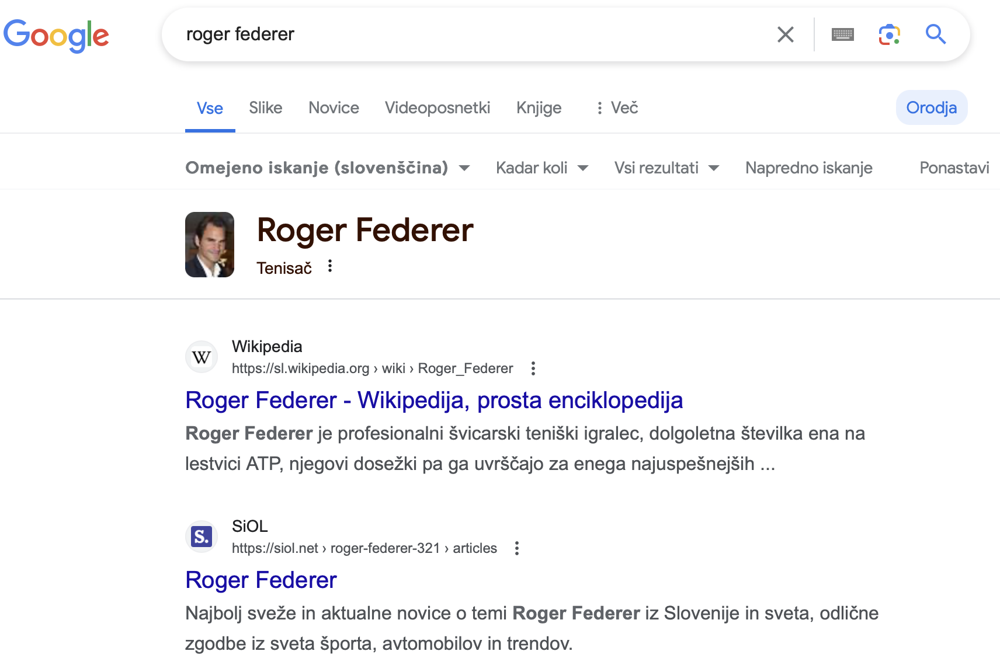

Algoritmi
Ljudje po svetu iščejo pomembne stvari (npr. Kje je najbližja bolnišnica?), zato je pomembno da iskalniki delujejo kar se da brezhibno. Torej vemo že, da iskalnik ne išče v sedanjosti, ampak se ta proces zgodi že pred vpisom naše poizvedbe. Ko mi vtipkamo poizvedbo »Roger Federer« iskalnik pregleda vsako besedo posebej in s pomočjo indeksa iskalnika pokaže strani, ki te besede vsebujejo. (Code.org, 2017)
Iskalnik mora ugotoviti kaj potrebujemo in vrniti najbolj pomembne podatke, ti se seveda iz dneva v dan spreminjajo in izboljšujejo. Iskalnik pri preverjanju upošteva več različnih kriterijev, da je zadetek kar se da ustrezen in jih razvrsti v primerno zaporedje. Tukaj je nekaj kriterijev po katerih iskalniki razvrščajo: (Code.org, 2017)
-
Ali je beseda v naslovu spletne strani?
Seveda če je beseda v naslovu, bo zadetek veliko višje razvrščen, kot če je beseda v malem tisku. -
Ali so iskane besede skupaj/v istem odstavku.
Velika razlika je ali besede, ki jih iščemo stojijo skupaj, ali pa je ena na naslovni strani in druga na podstrani do katere pridemo s tremi kliki. -
Koliko strani je povezanih s to stranjo?
Več povezav kot jih stran ima, višje je uvrščena. -
Koliko ljudi obišče dano stran?
Veliko podjetij »živi« od ogledov, zato je pomembno, da njihovo stran obišče veliko ljudi in da je visoko uvrščena. Pomembno pa je tudi koliko časa posameznik na tej strani ostane, zato mora biti uporabniku prijazna (lahko navigiranje po strani, lep izgled itd.). -
Rezultati v uporabnikovi okolici.
Ko iščemo »nakupovalni center« si seveda želimo nakupovalne centre v bližini in ne »na drugem koncu sveta«. -
Jezik v katerem napišemo poizvedbo.
Pomembno je, da je jezik v katerem je zadetek isti, kot jezik v katerem je poizvedba ali pa v Angleščini. Velikokrat že ob kliku na stran dobimo možnost za prevod celotne strani v jezik v katerem je napisana poizvedba. -
Pomen besede glede na priložene besede.
To predvsem velja za dvopomenke kot sta klop in jezik.
Primer: Slovenščina je moj materni jezik., Včeraj sem dobil izpuščaje na jeziku.
Pomembno je da se iskalnik zaveda, da v prvi in drugi povedi beseda jezik nima istega pomena. -
Datum nastanka strani.
Datumi niso pomembni v vseh okoliščinah. Če iščemo »kaj je pes« nastanek strani ni zares pomemben, kajti to je stvar, ki je znana že dolgo. Če pa iščemo aktualne dogodke kot so »umetna inteligenca«, ki je v zgodnjem razvoju in se njeni podatki iz leta v leto razlikujejo, pa je datum zelo pomemben. Pravtako je datum pomemben pri statističnih podatkih, kot npr. »število prebivalcev Slovenije«. -
Ali je vsebina strani kakovostna?
To se oceni na podlagi slik, naslova, vsebine, avtorja itd. -
Ali ima stran povezave z drugimi visokokakovostnimi stranmi?
Več visokokakovostnih strani kot ima stran bolje je uvrščena.